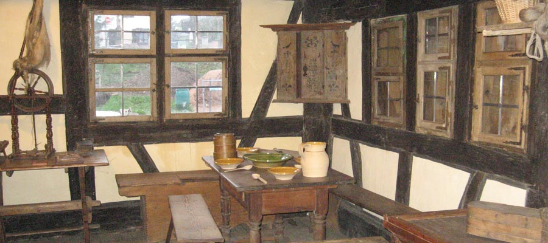

The collection
A special issue and sixteen Maisons Alsaciennes volumes were published between 1998 and 2014.

Research and memory
The Maisons Alsaciennes journals document rural life, buildings and regional heritage.
A special issue and sixteen Maisons Alsaciennes volumes were published between 1998 and 2014.
Architectural studies, oral history, rural practices, old recipes and accounts of houses saved or lost.
€10 per publication plus €4 postage. Send your name, address, volume number and quantity to the association.